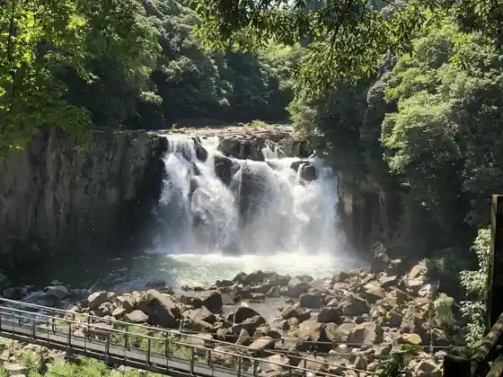
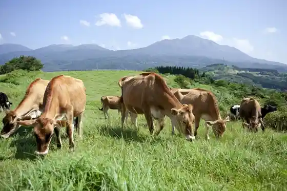
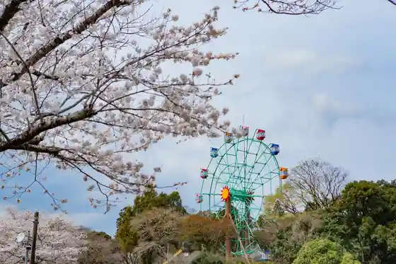
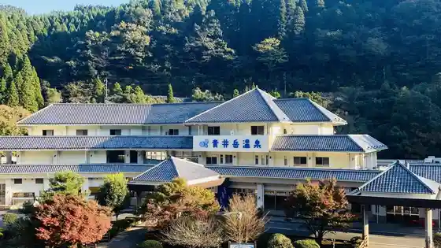

Kan Yuki O Taki
Miyakonojo, Miyazaki · 0986-38-2460 · Official / source link

Takachiho Ranch
Miyakonojo, Miyazaki · 0986-33-2102 · Official / source link

Kannon Ike Park
Miyakonojo, Miyazaki · 0986-58-6139 · Official / source link

Aoi Gaku Onsen
Miyakonojo, Miyazaki · 0986-57-2177 · Official / source link

KUROKIRI STADIUM (Miyazakiken Yamanokuchi Rikujokyogijo)
Miyakonojo, Miyazaki · 0986-57-2800 · Official / source link
Roadside Station Miyakonojo NiQLL
Miyakonojo, Miyazaki · 0986-38-5529 · Official / source link
KIRISHIMA GREENSHIP icoia (Kirishima Guriinshippu Ikoia)
Miyakonojo, Miyazaki · 0986-77-3553 · Official / source link
Miyakonojo Sports Park (Tenisukoto)
Miyakonojo, Miyazaki · 0986-23-7502 · Official / source link
Miyakonojo Sports Park Koara no Machisutajiamu
Miyakonojo, Miyazaki · 0986-23-7502 · Official / source link
Mallmall (Miyakonojo Ritsu Library)
Miyakonojo, Miyazaki · 0986-22-0239 · Official / source link
Kiri Shima Shuzo Supotsu Land Miyakonojo (Yamanokuchi Sports Park)
Miyakonojo, Miyazaki · 0986-57-2800 · Official / source link
Shochu Village Kiri Shima Fakutorii Garden
Miyakonojo, Miyazaki · 0986-21-8111 · Official / source link
Miyakonojo Takazaki Onsen Rasupa Takazaki
Miyakonojo, Miyazaki · 0986-62-5526 · Official / source link
Higashi Kiri Shima Shrine
Miyakonojo, Miyazaki · 0986-62-1713 · Official / source link
Kin Ontake Park
Miyakonojo, Miyazaki · 0986-39-6727 · Official / source link
Kannon Sakura Village
Miyakonojo, Miyazaki · 0986-29-2100 · Official / source link
Kami Hashira Miya
Miyakonojo, Miyazaki · 0986-23-1395 · Official / source link
Riijiento Miyazaki Kantorii Club
Miyakonojo, Miyazaki · 0986-33-1500 · Official / source link
Aoi Gaku Nature Park
Miyakonojo, Miyazaki · 0986-57-2177 · Official / source link
Miyakonojo Shimazu Tei
Miyakonojo, Miyazaki · 0986-23-2116 · Official / source link
Roadside Station Yamanokuchi
Miyakonojo, Miyazaki · 0986-57-5222 · Official / source link
Miyakonojo Sports Park Pai no Mi Domu
Miyakonojo, Miyazaki · 0986-23-7502 · Official / source link
Hayamizu Shrine
Miyakonojo, Miyazaki · Official / source link
Miyakonojo History Museum
Miyakonojo, Miyazaki · 0986-25-8011 · Official / source link
Haha Satoru Oka Park
Miyakonojo, Miyazaki · 0986-38-2460 · Official / source link
Tachibana Tenmondai
Miyakonojo, Miyazaki · 0986-62-4936 · Official / source link
Miyakonojo Takagi Sports Park (Sogo Gym)
Miyakonojo, Miyazaki · 0986-58-5514 · Official / source link
Miyakonojo Takasaki General Park (Yakyujo)
Miyakonojo, Miyazaki · 0986-62-4448 · Official / source link
Ajisai Park
Miyakonojo, Miyazaki · 0986-57-3113 · Official / source link
Hayamizu Koen Taiiku Bunka Center (Ariina)
Miyakonojo, Miyazaki · 0986-24-6454 · Official / source link
Yamanokuchi Fumoto Bunya Fushi Ningyo Joruri Museum
Miyakonojo, Miyazaki · 0986-57-5295 · Official / source link
Kannon Semizu Michi
Miyakonojo, Miyazaki · 0986-23-9547 · Official / source link
Miyakonojo Wainarii
Miyakonojo, Miyazaki · 0986-33-1111 · Official / source link
Hayamizu Koen Taiiku Bunka Center (Sabuariina)
Miyakonojo, Miyazaki · 0986-24-6454 · Official / source link
Miyakonojo Takagi Sports Park (Yakyujo)
Miyakonojo, Miyazaki · 0986-58-5514 · Official / source link
Hayamizu Koen Taiiku Bunka Center (Kyudo Ba)
Miyakonojo, Miyazaki · 0986-24-6454 · Official / source link
AKAKIRI FIELD (Yamanokuchi Sports Park Rikujokyogijo)
Miyakonojo, Miyazaki · 0986-57-2800 · Official / source link
Yamanokuchi Sports Park Tamokuteki Plaza
Miyakonojo, Miyazaki · 0986-57-2800 · Official / source link
Hayamizu Koen Taiiku Bunka Center (Budo Ba)
Miyakonojo, Miyazaki · 0986-24-6454 · Official / source link
Miyakonojo Takasaki General Park (Rikujokyogijo)
Miyakonojo, Miyazaki · 0986-62-4448 · Official / source link
Miyakonojo Takasaki General Park (Gym)
Miyakonojo, Miyazaki · 0986-62-4448 · Official / source link
Miyakonojo Takagi Sports Park Okunai Kyogijo
Miyakonojo, Miyazaki · 0986-58-5514 · Official / source link
Miyakonojo Haha Satoru Oka Kantorii Club
Miyakonojo, Miyazaki · 0986-24-3420 · Official / source link
Miyakonojo Takagi Sports Park (Tamokuteki Plaza)
Miyakonojo, Miyazaki · 0986-58-5514 · Official / source link
Miyakonojo Takasaki General Park (Tenisukoto)
Miyakonojo, Miyazaki · 0986-62-4448 · Official / source link
Miyazakiken Yamanokuchi to Teki Renshujo
Miyakonojo, Miyazaki · 0986-57-2800 · Official / source link
Miyakonojo Takagi Sports Park (Tenisukoto)
Miyakonojo, Miyazaki · 0986-58-5514 · Official / source link
Miyakonojo Sports Park Kurisshuburupen
Miyakonojo, Miyazaki · 0986-23-7502 · Official / source link
Ki Yuki Kawauchi Dam
Miyakonojo, Miyazaki · 0986-23-2425 · Official / source link
Reimbosupotsu Land Gorufu Club
Miyakonojo, Miyazaki · 0986-58-3900 · Official / source link